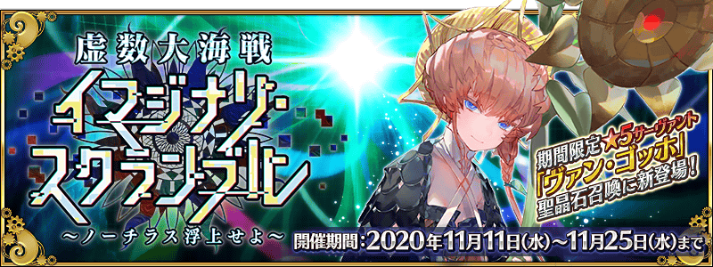
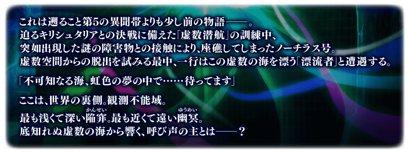

舉辦期間限定活動「虛數大海戰Imaginary Scramble ～鸚鵡螺浮出吧～」！
鸚鵡螺號的「虛數潛航」訓練中，全員突然遇上麻煩。
為了從虛數空間逃脫，開始在虛數之海的探索。
走遍無數的海域，從虛數之海回歸吧！
本活動是描寫第2部 第4章「Lostbelt No.4 創世滅亡輪廻 由伽・剎多羅 黑色最終之神」之後的故事。
並且，撰寫劇本的是由『人狼村之謎レイジングループ(KEMCO)』、『鎌切村忌譚(“收錄在FGO推理小說選集・迦勒底的事件簿 file.02” )』作者amphibian氏擔任！
敬請期待對應破例以『虛數空間』為舞台的活動，也能說破例地與外部寫手的合作活動！
※本頁面皆為開發中圖片。會有與實際圖片相異的情況。 ※一部份的關卡為後日開放。
◆活動舉辦期間◆
2020年11月11日(三) 19:30～11月25日(三) 11:59
◆活動參加條件◆
滿足以下條件的御主才能參加
・通過第2部 第1章「Lostbelt No.1 永久凍土帝國 安娜塔西亞 獸國的皇女」
※不需要通過亞種特異點(從Ⅰ到Ⅳ)。
※文字冒險部份包含第2部 第2章～第2部 第4章的一部份內容。
注意
本活動的參加條件雖然通過是第2部 第1章，但由於本活動是相當於在第2部 第4章之後的故事，本活動的故事會包含有關第2部 第2章～第2部 第4章的內容。關於尚未通過到第2部 第4章的參加玩家，敬請見諒包含一部份劇透。
◆有關從者真名的注意◆
在2018年12月31日(二) 23:00以後新配信的主線故事及期間限定活動、一部份關卡、宣傳活動及召喚中，會顯示隱藏真名的對象從者真名。
※2018年12月31日(一) 22:59前已經配信的主線故事、復刻活動、一部份關卡中不在此限。
在「Fate/Grand Order 迦勒底放送局 Vol.14 虛數大海戰Imaginary Scramble 配信前夕SP」中由於達成了7萬轉推，實施放送記念登入獎勵！
◆領取期間◆
◆贈送內容◆
◆贈送對象◆
在下述期間中登入的話，贈送聖晶石12個
2020年11月12日(四) 3:00～11月19日(四) 2:59
上述期間中，在初次進行登入「Fate/Grand Order」的時間點，贈予至禮物箱。
※期間內未登入的話無法領取。
※禮物只能領取1次。
聖晶石12個
2020年11月12日(四) 2:59前通過「特異點F 炎上汙染都市 冬木」的御主對象
※上述時間前，在管理室(ターミナル)畫面的關卡橫幅必須要有「CLEAR」的文字顯示。
在「Fate/Grand Order」官方網站內首頁及Gallery，公開了期間限定活動「虛數大海戰Imaginary Scramble ～鸚鵡螺浮出吧～」的電視廣告。
敬請確認。
動畫製作：A-1 Pictures
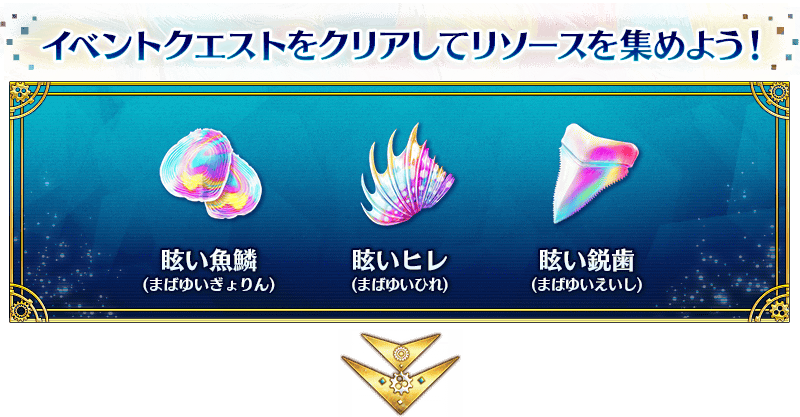
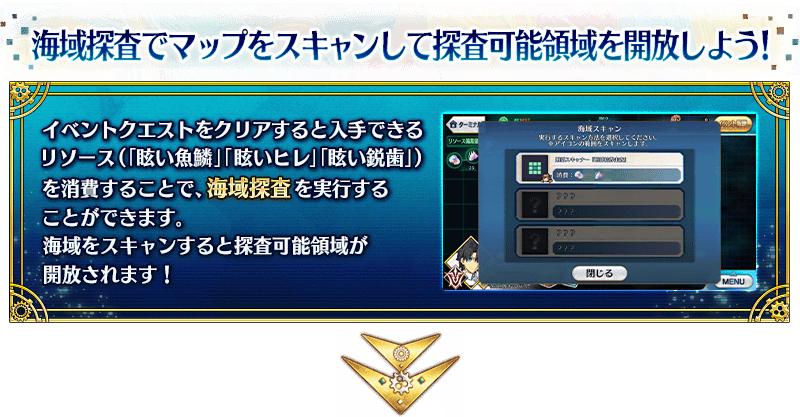
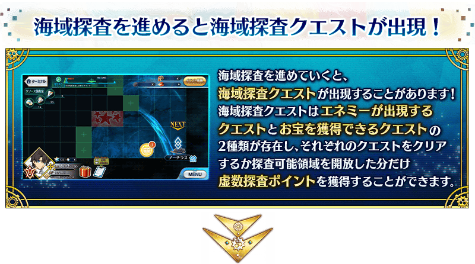
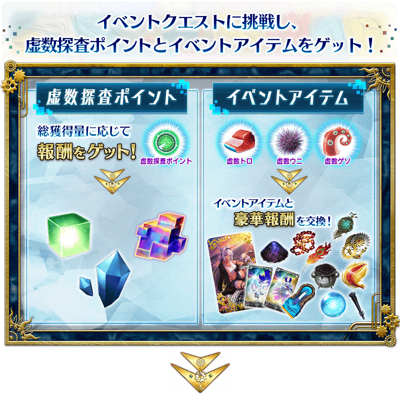
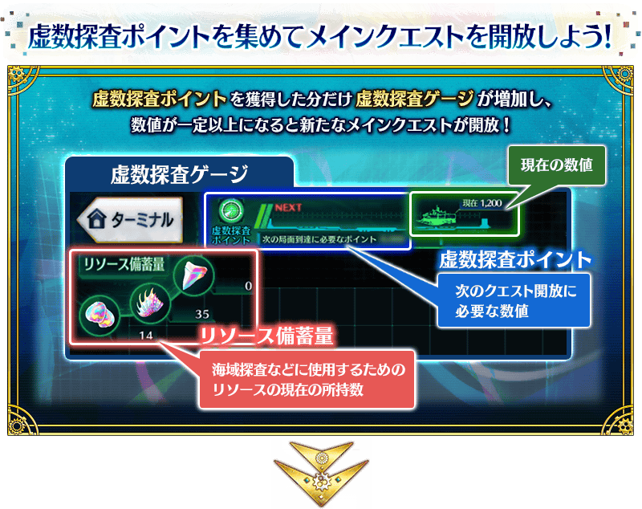

享受劇情的主線關卡如下列行程表開放。
推進主線關卡的話，會開放收集活動道具的自由關卡。
之後的自由關卡，是靠通過主線關卡和自由關卡來開放。
【關卡的舉辦期間】
| 關卡的種類 | 舉辦期間 |
|---|---|
| 序幕～ 主線關卡 第一幕 自由關卡 |
2020年11月11日(三) 19:30～ 11月25日(三) 11:59 |
| 主線關卡 第二幕 閒話1 自由關卡 |
2020年11月12日(四) 17:00～ 11月25日(三) 11:59 |
| 主線關卡 第三幕 閒話2 自由關卡 |
2020年11月13日(五) 17:00～ 11月25日(三) 11:59 |
| 主線關卡 第四幕 閒話3 自由關卡 |
2020年11月14日(六) 17:00～ 11月25日(三) 11:59 |
| 主線關卡 第五幕 | 2020年11月15日(日) 17:00～ 11月25日(三) 11:59 |
| 終幕 自由關卡 |
2020年11月18日(三) 17:00～ 11月25日(三) 11:59 |
期間限定活動「虛數大海戰Imaginary Scramble ～鸚鵡螺浮出吧～」中，邊「海域探査」邊推進地圖畫面上的可探査領域。
海域探査中，對可探査領域消耗資源(「耀眼魚鱗」「耀眼魚鰭」「耀眼銳齒」)施行海域掃描的話，會開放隱藏的地點。
並且，推進海域探査會有可發現海域探査關卡的情況。 海域探査關卡存在「敵人出現的海域探査關卡」と「可獲得寶物的海域探査關卡」的2種類，「敵人出現的海域探査關卡」是與阻止海域探査去路的不好對付敵人的戰鬥、「可獲得寶物的海域探査關卡」是可獲得報酬。
另外，通過任何海域探査關卡來開放可探査領域的話，能獲得虛數探査點數。
收集一定量的虛數探査點數後會開放下個主線關卡，以施行海域探査從虛數之海逃脫為目標吧！

關於海域掃描
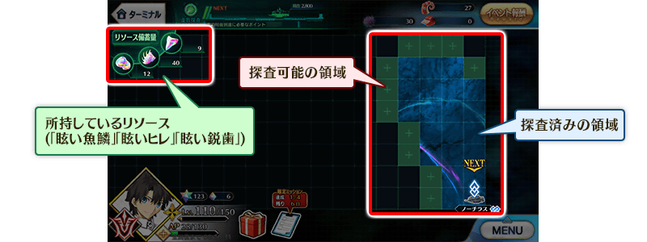
變亮的領域是「探索完畢」，變暗的領域是「可以探索」。消耗在畫面左方顯示的資源(「耀眼魚鱗」「耀眼魚鰭」「耀眼銳齒」)，在可探査領域進行海域掃描的話，可讓該領域探査完畢。
海域掃描，能對與探査完畢領域相鄰的可探査領域施行。但是，無法對與敵影相鄰的領域。
海域掃描會有好幾種，推進主線關卡的話會增加能使用的掃瞄。
根據使用的掃瞄會有可探査範囲差異，考量波紋和敵影的位置施行海域掃描，推進海域探査吧。
※在海域掃描施行中碰到敵影德化，該方向的海域掃描會停在敵影為止。
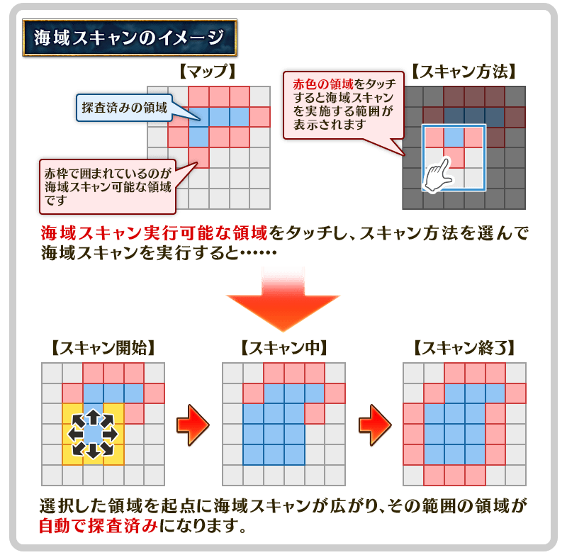
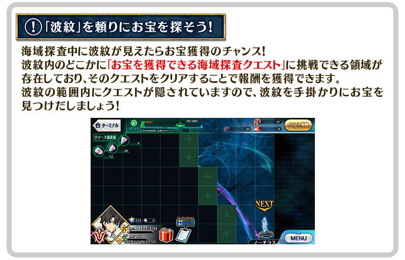
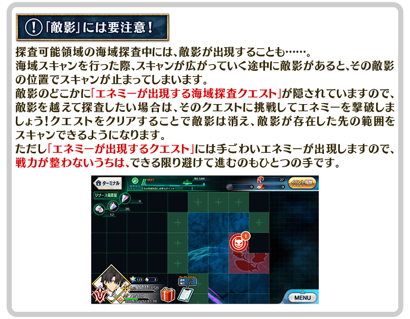
本活動中，通過特定關卡的話變得可進行「援護請求」。
使用「援護請求」的話可受到從同行中從者的援護，在戰鬥中對我方或敵人發揮特別的效果。
另外，想使用「援護請求」的話需要「耀眼魚鱗」「耀眼魚鰭」「耀眼銳齒」的資源，消耗的資源因從者而異。
另外，使用「援護請求」的戰鬥中敗北或撤退的情況，會失去消耗的資源。
「援護請求」在所有活動關卡中都能使用，「援護請求」的效果會對包含候補的我方全體作用，持續到戰鬥結束為止。
關卡中由於在特別有效的「援護請求」圖示會顯示「推薦(推奨)」顯示，積極地活用吧。
※在「援護請求」選擇的從者與支援從者不同，無法在戰鬥同行。 ※「援護請求」就算進行連續出撃時也能使用。在連續出撃進行「援護請求」的情況也會消耗資源(「耀眼魚鱗」「耀眼魚鰭」「耀眼銳齒」)。


虛數探査點數的總獲得量到達一定量的話，可開放新關卡或獲得達成報酬。
達成報酬可在點擊管理室(ターミナル)畫面右上的「活動報酬」鍵後顯示的「虛數探査點數報酬」畫面確認。
※數探査點數的總獲得量是計算在海域探査關卡通過報酬及開放可探査領域中獲得的虛數探査點數。
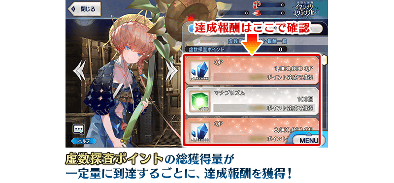
【11月18日(三) 17:00追記】
以通過期間限定活動「虛數大海戰Imaginary Scramble ～鸚鵡螺浮出吧～」所有主線關卡、獲得虛數探査點數290,000以上的御主為對象，開放高難易度的「挑戰關卡」。
「挑戰關卡」就算通過後也不會消失，可以變更從者和概念禮裝的組合等後無限次挑戰。
※關卡通過報酬、戰利品、御主EXP、魔術禮裝EXP、絆點數只可在初次通過時獲得。
◆挑戰關卡開放時間◆
2020年11月18日(三) 17:00～
◆挑戰關卡參加條件◆
滿足以下條件的御主才能參加
・通過期間限定活動「虛數大海戰Imaginary Scramble ～鸚鵡螺浮出吧～」的所有主線關卡
・獲得虛數探査點數290,000以上
◆挑戰關卡初次通過報酬◆
傳承結晶 1個
超值攻略方法・其1
期間中，除了本活動的文字冒險部份中活躍的從者外，「穿著泳裝的從者」及「夏日活動中追加靈衣的男性從者」會成為活動加成的對象，在活動關卡中會得到「自身的攻擊威力提升」與「活動道具的掉落獲得數提升」及在關卡通過時「絆點數獲得量提升」的加成！
關於「夏日活動中追加靈衣的男性從者」，就算穿著靈衣的情況也不會對活動加成的效果量有所變化，本活動是在虛數之海展開，請務必穿著海相關的靈衣享受活動！
※活動加成的效果量因從者而異。 ※瑪琇・基利艾拉特的「絆點數獲得量提升」效果，是所謂「我方全體含候補的絆點數獲得量提升」的效果。支援時此效果無效。
【活動加成的效果與對象從者】
| 自身的 攻擊威力 |
絆點數 獲得量 |
職階 | 稀有度 | 從者名 |
|---|---|---|---|---|
| ＋100% | 只限自身 ＋50% |
Rider | ★★★★★ | 尼莫 |
| Foreigner | ★★★★★ | 梵谷 | ||
| ＋50% | 只限自身 ＋20% |
Saber | ★★★★ | 葛飾北齋 |
| ★★★★ | 弗蘭肯斯坦 | |||
| Archer | ★★★★ | 刑部姬 | ||
| Lancer | ★★★★ | 謎之Alterego・Λ | ||
| ★★★★ | 源賴光 | |||
| Caster | ★★★★★ | 斯卡哈＝斯卡蒂 | ||
| ★★★ | 吉爾・德・雷 | |||
| Assassin | ★★★★ | 武則天(不夜城的Assassin) | ||
| Berserker | ★★★★★ | 項羽 | ||
| MoonCancer | ★★★★ | BB | ||
| Foreigner | ★★★★★ | 阿比蓋爾・威廉斯 | ||
| ★★★★★ | 阿比蓋爾・威廉斯〔夏〕 | |||
| ★★★★★ | 葛飾北齋 | |||
| ★★★★★ | Voyager | |||
| ★★★★★ | 楊貴妃 | |||
| ★★★★ | 謎之女主角XX | |||
| 我方全體 +5% |
Shielder | ★★★ | 瑪琇・基利艾拉特 | |
| ＋30% | 只限自身 ＋20% |
Saber | ★★★★★ | 西格魯德 |
| ★★★★ | 齊格飛 | |||
| ★★★★ | 女王梅芙 | |||
| ★★★★ | 巴御前 | |||
| ★★★★ | 蘭陵王 | |||
| Archer | ★★★★★ | 阿爾托莉亞・潘德拉剛 | ||
| ★★★★★ | 貞德 | |||
| ★★★★ | 安妮・伯妮＆瑪莉・瑞德 | |||
| ★★★★ | 伊莉雅絲菲爾・馮・愛因茲貝倫 | |||
| ★★★★ | Emiya | |||
| ★★★★ | 海倫娜・布拉瓦茨基 | |||
| ★★★ | 羅賓漢 | |||
| Lancer | ★★★★★ | 玉藻前 | ||
| ★★★★ | 茨木童子 | |||
| ★★★★ | 清姬 | |||
| ★★★★ | 虞美人 | |||
| Rider | ★★★★★ | 阿爾托莉亞・潘德拉剛〔Alter〕 | ||
| ★★★★ | 伊絲塔 | |||
| ★★★★ | 卡米拉 | |||
| ★★★★ | 紫式部 | |||
| ★★★★ | 莫德雷德 | |||
| Caster | ★★★★★ | 尼祿・克勞狄烏斯 | ||
| ★★★★★ | 梅林 | |||
| ★★★★ | 吉爾伽美什 | |||
| ★★★★ | 瑪莉・安東尼 | |||
| Assassin | ★★★★ | 牛若丸 | ||
| ★★★★ | 沖田・J・總司 | |||
| ★★★★ | 斯卡哈 | |||
| ★★★★ | 尼托克里絲 | |||
| ★★★ | 風魔小太郎 | |||
| Berserker | ★★★★★ | 宮本武藏 | ||
| ★★★★ | 織田信長 | |||
| ★★★★ | 貞德〔Alter〕 | |||
| ★★★★ | 布倫希爾德 | |||
| Ruler | ★★★★★ | 阿爾托莉亞・潘德拉剛 | ||
| ★★★★ | 瑪爾大 | |||
| Avenger | ★★★★★ | 巖窟王 | ||
| MoonCancer | ★★★★★ | 殺生院祈荒 | ||
| ★★★★★ | BB |
【掉落獲得數提升的道具與對象從者】
| 活動道具 | 職階 | 稀有度 | 從者名 | |
|---|---|---|---|---|


|
耀眼魚鱗+1 耀眼魚鰭+1 耀眼銳齒+1 | Rider | ★★★★★ | 尼莫 |
| Foreigner | ★★★★★ | 梵谷 | ||
|
|
耀眼魚鱗+1 | Lancer | ★★★★★ | 玉藻前 |
| ★★★★ | 茨木童子 | |||
| ★★★★ | 清姬 | |||
| ★★★★ | 虞美人 | |||
| ★★★★ | 謎之Alterego・Λ | |||
| ★★★★ | 源賴光 | |||
| Caster | ★★★★★ | 斯卡哈＝斯卡蒂 | ||
| ★★★★★ | 尼祿・克勞狄烏斯 | |||
| ★★★★★ | 梅林 | |||
| ★★★★ | 吉爾伽美什 | |||
| ★★★★ | 瑪莉・安東尼 | |||
| ★★★ | 吉爾・德・雷 | |||
| MoonCancer | ★★★★★ | 殺生院祈荒 | ||
| ★★★★★ | BB | |||
| ★★★★ | BB | |||
| Foreigner | ★★★★★ | 阿比蓋爾・威廉斯 | ||
| ★★★★★ | 阿比蓋爾・威廉斯〔夏〕 | |||
| ★★★★★ | 葛飾北齋 | |||
| ★★★★★ | Voyager | |||
| ★★★★★ | 楊貴妃 | |||
| ★★★★ | 謎之女主角XX | |||
|
|
耀眼魚鰭+1 | Archer | ★★★★★ | 阿爾托莉亞・潘德拉剛 |
| ★★★★★ | 貞德 | |||
| ★★★★ | 安妮・伯妮＆瑪莉・瑞德 | |||
| ★★★★ | 伊莉雅絲菲爾・馮・愛因茲貝倫 | |||
| ★★★★ | Emiya | |||
| ★★★★ | 海倫娜・布拉瓦茨基 | |||
| ★★★★ | 刑部姬 | |||
| ★★★ | 羅賓漢 | |||
| Rider | ★★★★★ | 阿爾托莉亞・潘德拉剛〔Alter〕 | ||
| ★★★★ | 伊絲塔 | |||
| ★★★★ | 卡米拉 | |||
| ★★★★ | 紫式部 | |||
| ★★★★ | 莫德雷德 | |||
| Ruler | ★★★★★ | 阿爾托莉亞・潘德拉剛 | ||
| ★★★★ | 瑪爾大 | |||
| Shielder | ★★★ | 瑪琇・基利艾拉特 | ||
|
|
耀眼銳齒+1 | Saber | ★★★★★ | 西格魯德 |
| ★★★★ | 葛飾北齋 | |||
| ★★★★ | 齊格飛 | |||
| ★★★★ | 女王梅芙 | |||
| ★★★★ | 巴御前 | |||
| ★★★★ | 弗蘭肯斯坦 | |||
| ★★★★ | 蘭陵王 | |||
| Assassin | ★★★★ | 牛若丸 | ||
| ★★★★ | 沖田・J・總司 | |||
| ★★★★ | 斯卡哈 | |||
| ★★★★ | 尼托克里絲 | |||
| ★★★★ | 武則天(不夜城的Assassin) | |||
| ★★★ | 風魔小太郎 | |||
| Berserker | ★★★★★ | 項羽 | ||
| ★★★★★ | 宮本武藏 | |||
| ★★★★ | 織田信長 | |||
| ★★★★ | 貞德〔Alter〕 | |||
| ★★★★ | 布倫希爾德 | |||
| Avenger | ★★★★★ | 巖窟王 | ||
※就算成為對象從者也會有未在本活動的主線劇本登場的情況。 ※自11月4日(三) 17:00，在從者選擇畫面和從者強化畫面等，追加活動加成篩選器。由於是只顯示於活動活躍從者的便利功能，敬請活用。
超值攻略方法・其2
裝備活動限定概念禮裝與期間限定概念禮裝的話，在活動中會受到各式各樣的恩惠。
裝備可靠活動道具交換入手的活動限定概念禮裝「★5(SSR)ライク・ア・バード」及概念禮裝「★5(SSR)イマジナリ・アラウンド」「★4(SR)虚数魔術」的話，在活動關卡中自身的攻擊威力會提升します。
另外，裝備在聖晶石召喚Pick Up的期間限定概念禮裝「★5(SSR)ミステリー・トレジャー」「★4(SR)グレイテスト・オーシャン」「★3(R)カラー・ミー・トゥルー」的話，活動道具「虛數鮪魚」「虛數海膽」「虛數章魚腳」各自的掉落獲得數會提升。
※請注意各關卡的道具掉落率並非100％。
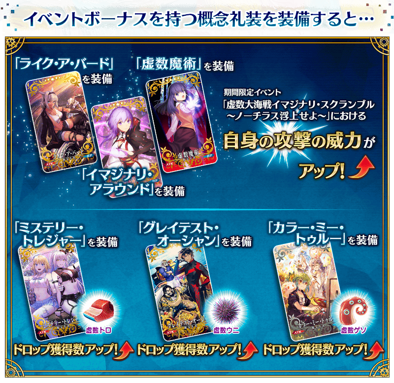
|
★★★★★SSR |
下述的概念禮裝「★5(SSR)イマジナリ・アラウンド」及「★4(SR)虚数魔術」會在所有的聖晶石召喚被抽出。
還有，在11月18日(三) 11:59前舉辦中的『「虛數大海戰」開幕前夕Pick Up召喚(每日交替)』有常駐Pick Up。
|
★★★★★SSR |
|
★★★★SR |

|
【活動限定】 |
| 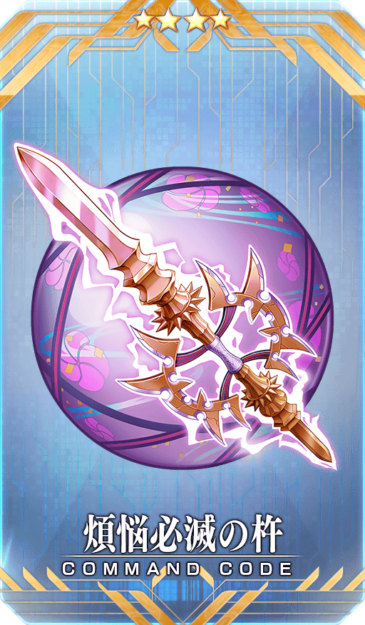 |
★★★★SR |
|
★★★R |

活動道具可自點擊管理室(ターミナル)畫面右上「活動報酬」鍵所顯示的「活動道具交換」畫面，交換以下的道具。
◆交換期間◆
2020年11月11日(三) 19:30～12月2日(三) 11:59
※活動道具交換期間結束後「虛數鮪魚」「虛數海膽」「虛數章魚腳」「耀眼魚鱗」「耀眼魚鰭」「耀眼銳齒」會消失。
※「耀眼魚鱗」「耀眼魚鰭」「耀眼銳齒」在活動期間結束後可交換成QP。
◆有關活動道具交換畫面從者的注意◆
※請注意本活動結束的2020年11月25日(三) 12:00之後，在活動道具交換畫面會變得不顯示一部份從者的立繪。
◆能用虛數鮪魚交換的道具◆
|
【活動限定概念禮裝】 【技能強化＆靈基再臨素材】 【靈基再臨素材】 【其他道具】 |
◆能用虛數海膽交換的道具◆
|
【活動限定概念禮裝】 【技能強化＆靈基再臨素材】 【靈基再臨素材】 【其他道具】 |
◆能用虛數章魚腳交換的道具◆
|
【活動限定概念禮裝】 【技能強化＆靈基再臨素材】 【其他道具】 |
強化「★3(R)吉爾・德・雷(Caster)」的特別關卡「從者強化關卡」，在迦勒底之門永久追加。
不僅進行對象從者的強化，也可獲得聖晶石做為關卡通過報酬。
※從者強化關卡請注意在沒有文字冒險部份。
◆追加時間◆
2020年11月11日(三) 19:30～
◆開放條件◆
持有的強化對象從者，必須使其最終再臨。
※未持有對象從者的話，不會出現關卡。
※關卡沒有舉辦期限。

在2020年舉辦的期間限定活動「從者夏令營！ ～迦勒底驚悚之夜～」中登場的「瑪琇・基利艾拉特」靈衣「常夏的泳裝Ver.02(常夏の水着Ver.02)」開放權在達文西工房的「稀有稜鏡交換」追加！
可用稀有稜鏡5個交換上述靈衣開放權入手。
想開放靈衣的話，除了靈衣開放權外再加上必須滿足一些開放條件。
◆追加時間◆
2020年11月11日(三) 19:30～
◆交換條件◆
滿足以下條件的御主才能交換
・通過「特異點F 炎上汙染都市 冬木」
・未通過期間限定活動「從者夏令營！ ～迦勒底驚悚之夜～」的關卡「オープニング『ショータイム』」
※在「稀有稜鏡交換」追加的靈衣「常夏的泳裝Ver.02」開放權為永久，沒有交換期限。 ※關於已獲得交換對象靈衣開放權的玩家，無法交換。
◆有關靈衣開放權的注意◆
※「瑪琇・基利艾拉特」的靈衣會配合外觀變化一部份語音。
◆追加道具(永久)◆
靈衣「常夏的泳裝Ver.02」開放權
| 追加道具 | 能交換次數 | 1次交換所需的 稀有稜鏡數 |
|---|---|---|
| 靈衣「常夏的泳裝Ver.02」開放權 | 1次 | 5個 |


「靈衣開放」是自強化畫面進行。
※「瑪琇・基利艾拉特」的靈衣「常夏的泳裝Ver.02」戰鬥角色不會身穿連帽衣。 ※「靈衣開放」後會自動切換戰鬥角色和圖示。若想回到「靈衣開放」前的狀態和變成其他再臨階段的情況，可自從者詳細畫面變更。 ※進行「靈衣開放」不會讓職階和能力等有所變化。
其他還有，期間限定「虛數大海戰Pick Up召喚(每日交替)」同時舉辦！
關於詳情，請自下述橫幅確認。